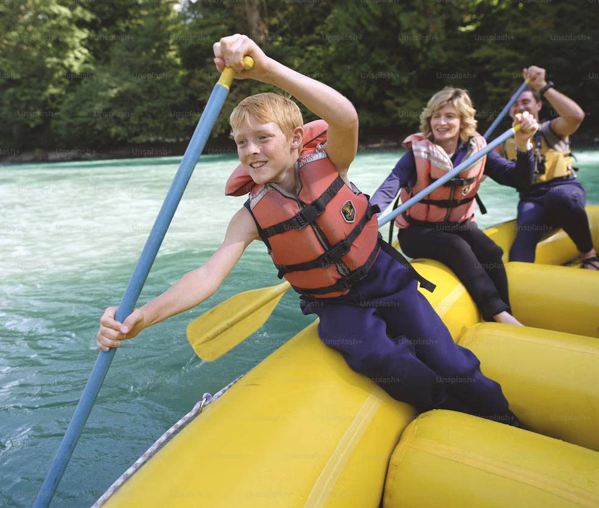

Employees

Our Motto: "Adventure Meets Tradition, Where Rapids Roar and Nature Soars!
Our Motto: "Adventure Meets Tradition, Where Rapids Roar and Nature Soars!
Founded by Native American Aiyana Redhawk in the early 1900s, "Redhawk Rapids" began as a Grand Canyon white water rafting company. Aiyana's deep connection to the land led to thrilling river expeditions. His commitment to environmental preservation set Redhawk Rapids apart. The company grew, becoming an icon of responsible adventure tourism. Aiyana's daughter, Sakari, continued his legacy, expanding operations across the American West. Today, Redhawk Rapids remains a symbol of Native American heritage and sustainable adventure, offering unforgettable journeys while safeguarding the natural beauty of the rivers and canyons that have been its home for over a century.